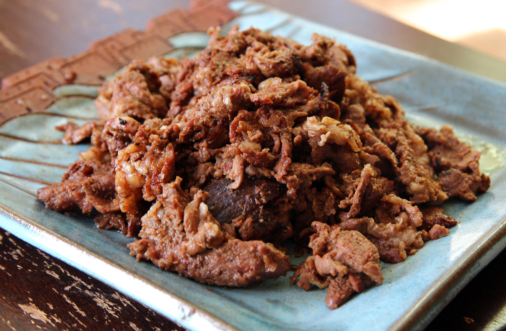

Maangchi's Beef Bulgogi
Description
This easy-peasy beef bulgogi adapted from Maangchi's recipe is a great entry point for those just learning to cook Korean food.
Ingredients
- 1 pound of beef tenderloin, sliced thinly into 1/2 inch x 2 inch and 1/8 inch thick pieces
- 2 tablespoons of vegetable oil
Marinade:
- 1/2 cup of crushed pear
- 1/4 cup onion purée
- 4 cloves of minced garlic
- 1 teaspoons minced ginger
- 1 chopped green onion
- 2 tablespoons soy sauce
- 2 tablespoons brown sugar (or 1 tablespoon of brown sugar and 1 1/2 tablespoons rice syrup)
- a pinch of ground black pepper
- 1 tablespoon toasted sesame oil
- several thin slices of carrot
Steps
- Mix all the marinade ingredients in a bowl.
- Add the sliced beef and mix well.
- Marinate for at least 30 minutes, or overnight for a tougher cut of beef.
- Heat vegetable oil in a pan on medium-high heat until it shimmers. Cook the beef slices about 1-2 minutes on each side or until just cooked through.